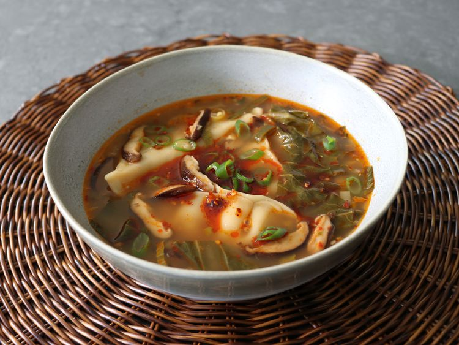

Return to mainpage
Spicy Potsticker Soup

Description
This spicy potsticker soup is fast, easy, incredibly delicious, and takes very little knife work to accomplish. It's exactly what you want when you don't know what you want.
Ingredients
2 tablespoons vegetable oil
1 cup sliced shiitake mushrooms
2 tablespoons minced fresh ginger
3 cloves garlic, minced
1 bunch green onions, sliced, white and green parts divided
8 cups chicken or vegetable broth
2 tablespoons soy sauce
1/4 cupts rice vinegar
2 teaspoons toasted sesame oil
2 teaspoons sriracha hot sauce
3 cups sliced bok choy
blabalbalbal
Directions
- Heat vegetable oil in a soup pot over high heat. Add mushrooms, and cook, stirring occasionally, until they start to brown, about 4 minutes.
- Stir in ginger, garlic, and white parts of sliced green onions, and cook just until fragrant, about 1 minute.
- Pour in broth and bring to a simmer. Stir in soy sauce, rice vinegar, sesame oil, and Sriracha.
- Add bok choy, green parts of sliced green onion, and frozen potstickers, and cook, stirring occasionally, until dumplings are heated through, 3 to 4 minutes.
- Just before potstickers are hot, mix miso paste with about 1/2 cup of hot broth, and stir into the soup. Turn off the heat, and stir in chili crisp. Taste for seasoning, and serve immediately.